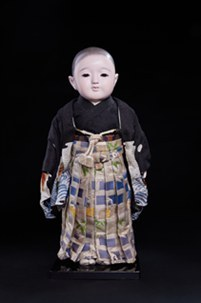

Ichimatsu Ningyō (Búp bê Ichimatsu nam) là một trong những dòng búp bê truyền thống nổi tiếng nhất của Nhật Bản, xuất hiện từ thời kỳ Edo (1603–1868). Tên gọi "Ichimatsu" được cho là bắt nguồn từ Sanogawa Ichimatsu, một diễn viên Kabuki nổi tiếng thế kỷ XVIII, người đã làm cho phong cách búp bê này trở nên phổ biến khắp Nhật Bản.
Khác với nhiều dòng búp bê mang tính biểu tượng hay sân khấu, Ichimatsu Ningyō được chế tác với mục tiêu tái hiện chân thực hình ảnh trẻ em Nhật Bản. Các nghệ nhân đặc biệt chú trọng đến tỷ lệ cơ thể, biểu cảm khuôn mặt và ánh mắt, tạo nên cảm giác gần gũi như một đứa trẻ thật.
Tác phẩm này khắc họa hình ảnh một bé trai mặc kimono và hakama truyền thống với họa tiết tinh tế. Gương mặt trắng thanh khiết, ánh mắt hiền hòa và tư thế đứng ngay ngắn thể hiện sự ngây thơ, trong sáng cũng như nét lễ phép được coi trọng trong văn hóa Nhật Bản.
Trong quá khứ, Ichimatsu Ningyō thường được các gia đình trưng bày như một món quà dành cho trẻ em hoặc làm vật lưu niệm trong những dịp quan trọng. Người Nhật tin rằng búp bê mang theo lời cầu chúc sức khỏe, bình an và sự trưởng thành tốt đẹp, đồng thời thể hiện tình yêu thương và sự gắn kết trong gia đình.
Ngày nay, Ichimatsu Ningyō không chỉ là một tác phẩm thủ công mỹ nghệ có giá trị cao mà còn là biểu tượng của nghệ thuật chế tác búp bê truyền thống Nhật Bản, góp phần lưu giữ vẻ đẹp văn hóa và hình ảnh tuổi thơ qua nhiều thế hệ.
市松人形は、江戸時代（1603〜1868年）に登場した、日本で最も有名な伝統人形のひとつです。「市松」という名は、18世紀の人気歌舞伎役者・佐野川市松に由来するという説が有力で（市松模様の衣装から、など諸説あります）、彼の人気によってこの人形のスタイルが日本中に広まったといわれています。
象徴的・舞台的な性格を持つ多くの人形と異なり、市松人形は日本の子どもの姿をありのままに再現することを目指して作られています。職人は体の比率、顔の表情、まなざしに特にこだわり、本物の子どものような親しみやすさを生み出しています。
本作は、繊細な文様の伝統的な着物と袴を身につけた男の子の姿を表しています。白く清らかな顔、穏やかなまなざし、きちんとした立ち姿が、無垢さ、清らかさ、そして日本文化で大切にされる礼儀正しさを表しています。
かつて市松人形は、子どもへの贈り物や大切な節目の記念として、各家庭に飾られてきました。日本の人々は、人形には健康、平安、健やかな成長への願いが込められていると信じ、また家族の愛情と絆の表れと考えてきました。
今日、市松人形は価値の高い手工芸品であるだけでなく、日本の伝統人形制作の象徴でもあり、文化の美しさと子ども時代の姿を世代を超えて伝えています。